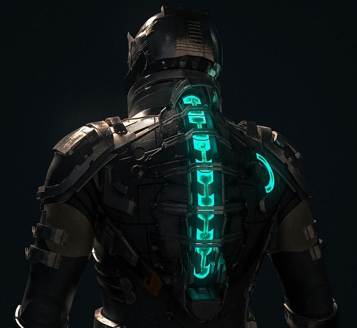
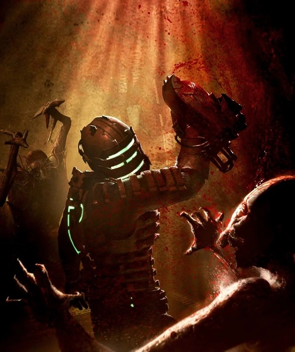

Посмотрим сможите ли вы угадать этого персонажа по затылку?
Как многие из вас могли догадаться, это Айзек Кларк гланый герой серии игр Dead space. Он инженер, пытающийся выбраться с гигантского космического корабля Ишимура. Ему противостоят некроморфы — погибшие члены экипажа Ишимуры, воскресшие и превратившиеся в чудовищ под действием инопланетного сигнала. Нашему главному герою предстоит пережить как внезапные нападения врагов, так и пугающие картины насилия и телесных трансформаций, он пройдет через чувство страха и тревоги.
А теперь несколько интересных фактов об Айзеке Кларке:
- Имя Айзека Кларка, главного героя игры, — своеобразная дань уважения знаменитым писателям-фантастам Айзеку Азимову и Артуру Кларку.
- Айзека озвучивает Ганнер Райт с него же списана и внешность героя.
- Плазменный резак нашего главного героя, изначально разработанный для горных и инженерных работ оказался невероятно полезен против быстро регенерирующихся монстров.
- Термин «Necromorph» с древнегреческого языка переводится дословно как: νεκρό — смерть, μορφος — форма, мёртвая форма.